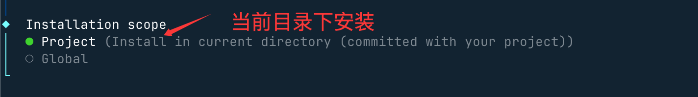
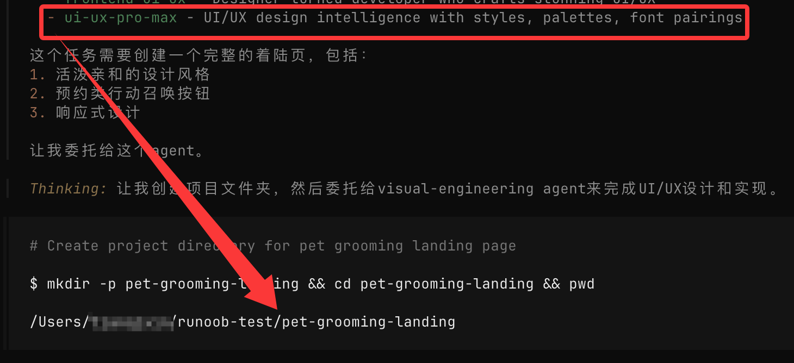
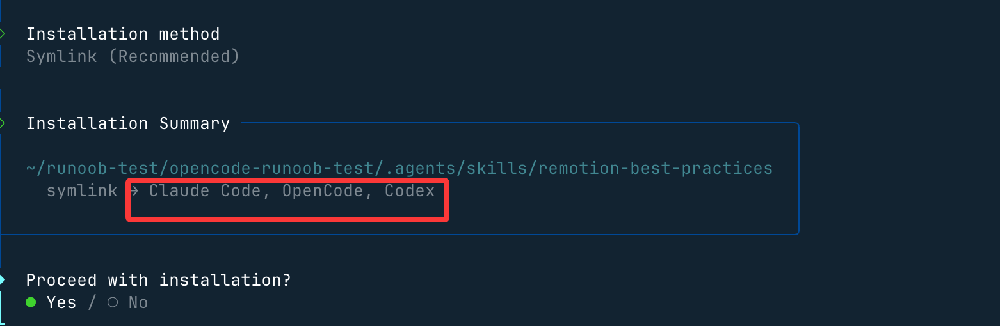
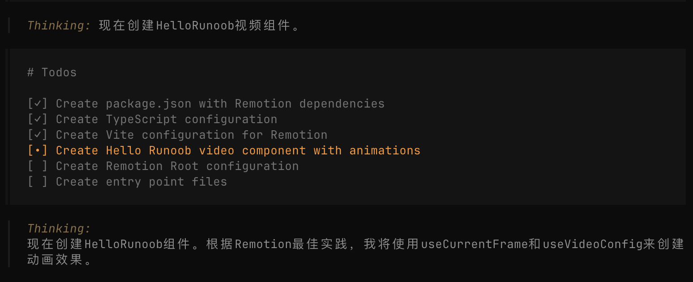

OpenCode skills Usage
In the previous content, we have learned about OpenCode and skills. If you haven't read them yet, you can refer to:
Next, we will introduce how to use skills in OpenCode.
There are already many ready-made skills on the market, and we can use them directly. We canhttps://skills.sh/find more skills.
Installation method:
npx skills add <owner/repo>
Note:If you are not familiar with npx, you can refer to:npx Getting Started Tutorial
ui-ux-pro-max
Next, we will use the ui-ux-pro-max skill for demonstration, address:https://skills.sh/nextlevelbuilder/ui-ux-pro-max-skill/ui-ux-pro-max。
UI/UX Pro Max is an AI design skill (AI Skill) that provides structured design knowledge and automated assistance for building professional user interfaces (UI) and user experiences (UX). It is mainly used for integration with AI coding assistants (such as Claude Code, Cursor, Windsurf, etc.).
UI/UX Pro Max contains a searchable design database that can intelligently recommend interface styles, color schemes, typography, and component implementation methods based on natural language prompts.
Installation command:
npx skills add https://github.com/nextlevelbuilder/ui-ux-pro-max-skill --skill ui-ux-pro-max
During the installation process, you can check the environment we need, such as OpenCode:

Next, here select the current directory, which is the one we created earlieropencode-example-test, another optionGlobalis global installation:

Next, just press Enter all the way.
UsageopencodeUse the command to open OpenCode, and enter/uiand you can see the installed skill:

Next, we can directly enter the requirement:
Build a landing page for pet grooming services, with a lively and friendly style, and set up appointment-type call-to-action buttons.
The AI will automatically call the installed skill to design, just press Enter all the way:

Next, it will automatically generate directories and files:

Then check the final result, it looks much better:

remotion-best-practices
Next, use the remotion-best-practices skill for demonstration.
- Opencode: a tool responsible for letting AI automate coding workflows
- remotion-best-practices: a skill responsible for directly generating videos using React
remotion-best-practices is a specialized skill for Remotion, containing dozens of rule files (based on official best practices), such as:
- 3D content
- Animation basics
- Media import (images, audio, fonts)
- Subtitles and subtitle synchronization
- Sequence and scene organization
- Transparent video and editing
- Text animation & interpolation methods …
Skill address:https://skills.sh/remotion-dev/skills/remotion-best-practices
Installation and Usage
Before we start, let's create a directoryopencode-example-test:
mkdir opencode-example-test cd opencode-example-test
In the opencode-example-test directory, we can use the npx command to install:
npx skills add remotion-dev/skills

During the installation process, you can check the environment we need, such as OpenCode:
Next, here select the current directory, which is the one we created earlieropencode-example-test, another optionGlobalis global installation:
Next, just press Enter all the way, after which the installation directory and supported development tools will be displayed:

Open the directory with VS Codeopencode-example-testand you can see this skill:
We can also open OpenCode and enter/remotionand you can see this skill:

Then enter in the input box:
生成一个 Hello Example！的演示视频
Next, the AI will find this skill:

Then the AI will use this skill to start designing and writing:

Other extensions